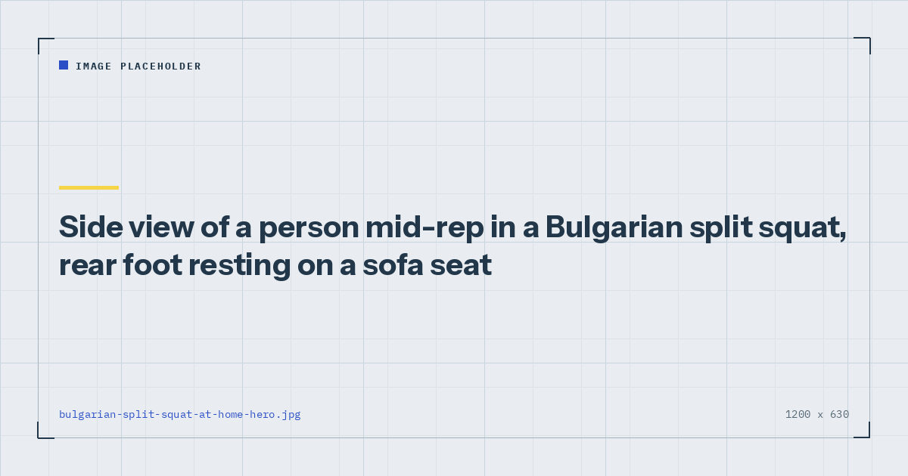

Bodyweight Strength
Bulgarian Split Squats at Home Using a Sofa
It is the hardest thing you can do to your legs with no equipment, and almost everyone sets it up wrong on the first attempt. The setup is most of the exercise.

If you train at home with no weights and you only add one new leg exercise, make it this one. It loads a single leg with most of your bodyweight, demands balance and hip stability, and produces a training effect that two-legged squats stop providing within a couple of months.
It is also genuinely unpleasant, which is a reasonable proxy for effective when the load is fixed.
Why this exercise is worth the discomfort
The core problem with bodyweight leg training is that two legs sharing your bodyweight is not much load. Once you can do twenty squats, adding more repetitions tests endurance rather than building strength.
A Bulgarian split squat puts roughly eighty-five per cent of your bodyweight through one leg. That is not quite a doubling, because the rear leg contributes something, but it is close enough to transform the exercise from an endurance drill into genuine strength work. It is the closest thing to adding weight that costs nothing.
It also trains balance and single-leg stability, which two-legged squats do not, and which matter for essentially everything you do outside a gym.
Setting it up
Stand facing away from a sofa or sturdy chair. Place the top of your rear foot — laces down — on the seat behind you. Hop the front foot forward until you find the right distance, then lower yourself and check the position.
At the bottom, your front shin should be roughly vertical and your front knee should be over your midfoot. If your knee is well past your toes and you feel it mostly in the front of the knee, your front foot is too close — move it forward. If you feel a strong stretch in the front of your rear thigh and cannot get much depth, it is too far — bring it back.
Expect to spend two or three sessions finding this. Once you have it, note roughly where your front foot sits relative to a floorboard or rug edge so you can reproduce it.
Getting the height right
This is where sofas cause trouble. A standard sofa seat is around forty-five centimetres, which is higher than the twenty to thirty centimetres usually recommended.
Too high tips your pelvis forward, reduces the depth you can reach, and puts more stress through the front of the rear hip. If your sofa feels wrong, try:
- A low coffee table or ottoman.
- The bottom step of a staircase — often close to ideal.
- A stack of two or three thick books.
- A folded towel on the floor, with just the toes elevated a few centimetres. Lower than standard but perfectly effective, and the easiest place to start.
Lower is safer than higher. If in doubt, use the lowest option available.
The movement
Lower under control until your front thigh is roughly parallel to the floor, or as deep as you can go with the torso upright and no discomfort. The rear knee travels toward the floor but does not need to touch it.
Drive back up through the middle of the front foot. Keep the torso mostly upright — a slight forward lean is fine and shifts emphasis toward the glutes, while staying very upright emphasises the quadriceps.
Hold a wall or doorframe with one hand if balance is the limiting factor. This is a legitimate scaling option, not a failure. Almost everyone needs it initially, and using it means the exercise trains your legs rather than your balance.
Four common mistakes
1. Setting the rear foot too high
Covered above, and the most common issue by a distance because sofas are the obvious choice and are usually too tall.
2. Standing too narrow front to back
The front foot ends up under the hip rather than well forward, which throws the knee past the toes and turns the exercise into a knee-dominant grind. Move the front foot forward until the shin is close to vertical at the bottom.
3. Pushing off the rear foot
The rear leg is there for balance, not propulsion. If you are driving up through it, you have converted a single-leg exercise back into a two-legged one. Keep the rear foot passive.
4. Doing too many too soon
This exercise produces significant soreness the first few times, particularly in the glutes and adductors. Start with two sets of six per leg regardless of how easy the first set feels. The soreness arrives on day two.
Single-leg loading places substantial demand on the front knee. If you have a diagnosed knee condition or a history of knee pain, speak to a physiotherapist before adding this exercise, and stop if you feel sharp pain rather than muscular effort. Ordinary burning in the quadriceps is expected; pain inside the joint is not.
How to programme it
Two to three sets of eight to twelve per leg, twice a week, as the first exercise in a lower-body session while you are fresh. Balance-demanding movements go early, for the reasons in how to structure a home workout.
Rest properly between sets — ninety seconds at least. This is a hard exercise and rushing it degrades every subsequent set.
It is the lead leg exercise in both the three-day split and the 30-minute parent session, which is a reasonable indication of how highly I rate it.
Making it harder
Once three sets of twelve per leg is manageable:
- Slow the descent to three or four seconds. Cheapest and most effective first step.
- Pause at the bottom for two seconds, removing all momentum.
- Elevate the front foot a few centimetres on a book, increasing the range of motion.
- Add load if you have anything — a rucksack with books in it works, as does a single dumbbell. Options in DIY home gym equipment.
Weekly volume drives adaptation,1 so adding a set is also legitimate progression — but with an exercise this demanding, making it harder usually beats making it longer.
Where to go next
For a full lower-body session built around single-leg work, see how to train legs at home without equipment. If your squat form is the underlying issue, start with bodyweight squat form.
Frequently asked questions
How high should the bench be for Bulgarian split squats?
Around twenty to thirty centimetres for most people. A standard sofa seat at roughly forty-five centimetres is usually too high, which tips the pelvis forward and limits depth. A low coffee table, the bottom stair, or a stack of books works better.
Can you do Bulgarian split squats on a sofa?
Yes, though most sofas are taller than ideal. If you feel a strong stretch across the front of the rear hip and cannot reach much depth, use something lower. Even elevating just the toes a few centimetres on a folded towel is effective.
Where should my front foot be in a Bulgarian split squat?
Far enough forward that your front shin is roughly vertical at the bottom of the repetition and the knee sits over the midfoot. If the knee travels well past the toes and you feel it mostly in the front of the knee, move the front foot forward.
Are Bulgarian split squats better than regular squats?
For home training with no weights, generally yes. They load a single leg with roughly eighty-five per cent of your bodyweight, which provides a genuine strength stimulus long after two-legged squats have become an endurance exercise.
Is it cheating to hold on to something?
No. Holding a wall or doorframe with one hand means the exercise trains your legs rather than your balance, which is usually what you want. Almost everyone needs support initially.
Why are Bulgarian split squats so hard?
Because one leg is carrying most of your bodyweight through a long range of motion while also stabilising against a narrow base. The combination of high load and balance demand is what makes them effective and unpleasant in equal measure.
Sources and further reading
- Schoenfeld BJ, Ogborn D, Krieger JW. “Dose-response relationship between weekly resistance training volume and increases in muscle mass: A systematic review and meta-analysis.” Journal of Sports Sciences, 2017;35(11):1073–1082. PubMed.
- Schoenfeld BJ, Grgic J, Ogborn D, Krieger JW. “Strength and Hypertrophy Adaptations Between Low- vs. High-Load Resistance Training: A Systematic Review and Meta-analysis.” Journal of Strength and Conditioning Research, 2017;31(12):3508–3523. PubMed.
- Currier BS, Mcleod JC, Banfield L, et al. “Resistance training prescription for muscle strength and hypertrophy in healthy adults: a systematic review and Bayesian network meta-analysis.” British Journal of Sports Medicine, 2023. PubMed.
- NHS. Strength and Flex exercise plan.
Comments
Comments are not enabled yet. Add a hosted comment embed (Disqus, Commento, Giscus) inside this container when you are ready.